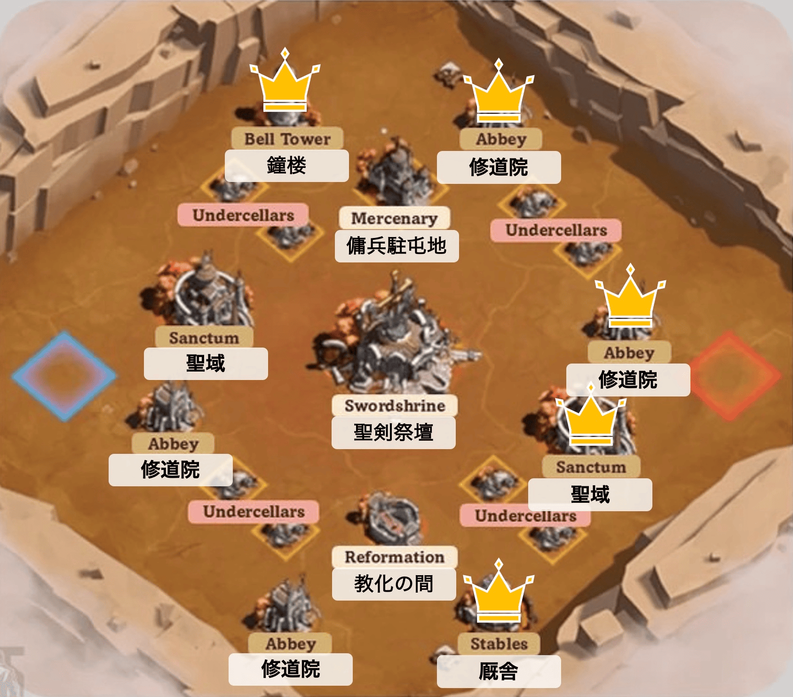
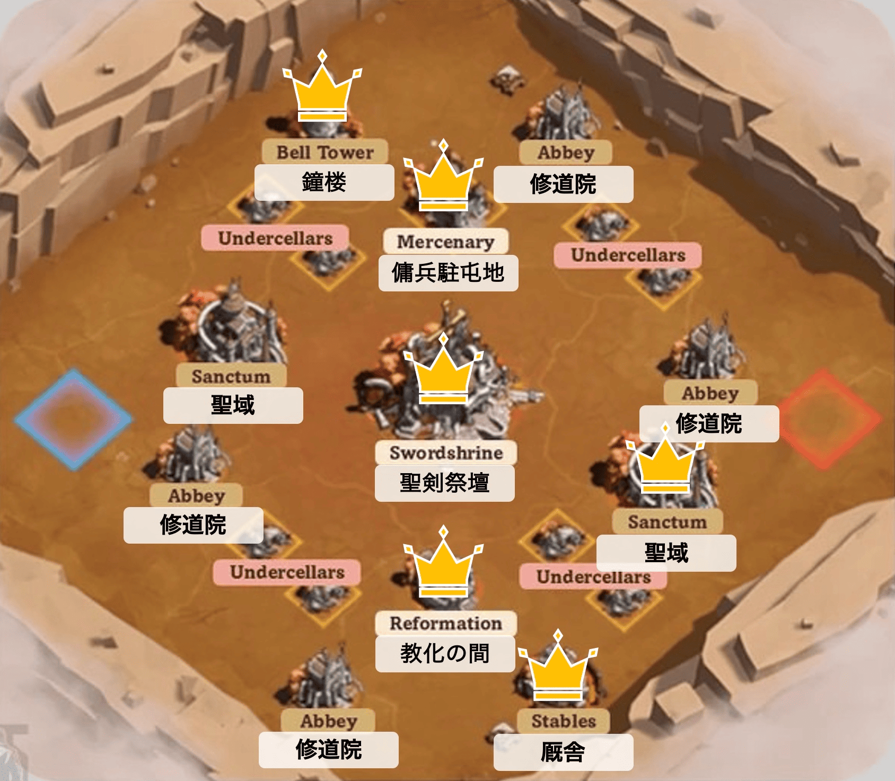

全体マップ

・防衛重視はそのまま
┗下の中盤防衛パターンを基本に定位置防衛
・初手、ラスト担当箇所のみ修正
・「担当拠点が奪われた場合」と「お約束」を要チェック！！
・あとはチャットを見ながら臨機応変に！
○隊長
・ささみさん：敵陣側聖域、修道院
→初回報酬獲得後：聖域キープのまま、鐘楼に集結攻撃
・BEYZUさん：自陣側聖域、修道院
→初回報酬獲得後：そのまま防衛
・MARUKOさん：右上修道院
→初回報酬獲得後：2軍を鐘楼へ
○隊員
・やおさん：敵陣側聖域→stay or 右上修道院
・あぼさん：敵陣側聖域→stay or 右上修道院
・ちぃ〜さん：右上修道院→stay or 敵陣側聖域
・エスティマちゃん：右上修道院→stay or 敵陣側聖域
・猫汁うどんさん：自陣側聖域、修道院→聖剣祭壇
・もねふさん：自陣側聖域、修道院→聖剣祭壇
・Baristaさん：自陣側聖域、修道院→聖剣祭壇
・桜流水さん：自陣側聖域、修道院
・酒場放浪人さん：自陣側聖域、修道院
・シルバニアさん：自陣側聖域、修道院
・安芸楓さん：自陣側聖域、修道院
○その他（全体指示＆後方支援）
・iaruth：左下修道院
→初回報酬獲得後：劣勢箇所の援護
*都市攻撃回避のため、隊員は建築物から少し距離をとって駐屯しよう！
A：敵陣側聖域を守れる場合
B：敵陣側聖域を守れそうにない場合
⓪できれば取られる前にチャットで連絡→金拾い隊出動！
①まずは金拾い！（相手より多く拾う！！）
②その場でステイ
③ささみさんの中央集結に加速で乗る
④集結着弾で奪取→金拾い
⑤そのまま防衛
*ささみさんは集結攻撃用部隊を手元に温存しておく
・ささみさん：金拾い部隊引き連れ、敵拠点の蹂躙（ポイント取れる順）
・MARUKOさん：王城、敵側聖域駐屯（ささみさんが動く前に入っておく）
・ちぃ〜さん、もねふさん、あぼさん、やおさん、iaruth：ささみさんについて飛ぶ金拾い部隊
┗毎回全員じゃなくてもok！（ただし最低2人は派遣）
・残りの隊員：そのまま防衛＆余ってる軍を聖剣祭壇へ！
*ささみさんのラスト集結は遠くからでも加速で乗ろう！
①行軍隊列の使用は3部隊以下
┗残りは温存し、金拾いと都市防衛に充てる
②周囲に金が散らばったら何よりも優先して拾う⭐️最重要⭐️
③敵が占領する拠点を単騎で奪わない
┗どんなに奪いやすそうでもNG
┗戦局が一気に傾くことも！⭐️要注意⭐️
④集結には無料の加速を使って積極的に乗る
⑤都市移転は貯まっても温存！
→金を拾う時に飛ぶ！
○基準値：毎分+600、初回占領+3,000(5分相当)
＊占領の所要時間：2分
・聖域(左右2箇所)：基準値の2倍
・修道院(その他4箇所)：1倍
・厩舎(右下1箇所)：0.4%
┗テレポートクールダウン50%減（12分→6分）
・鐘楼(左上1箇所)：0.4%
┗占領時間50%減（2分→1分）
・聖剣祭壇(中央1箇所)：基準値の3倍
・教化の間(中央下1箇所)：0.4倍
┗バフ：与ダメ15%増、被ダメ15%減
・傭兵駐屯地(中央上1箇所)：0.4倍
┗傭兵派遣：詳細不明
・初期建築物：8.8倍＝26,400
・途中解放建築物：3.8倍＝11,400
・解放前：8.8倍=5,280
→鐘楼、厩舎、聖域1、修道院2で過半数
・解放後：12.6倍=7,560
→聖剣祭壇、鐘楼、厩舎、教化の間、傭兵駐屯地、聖域1で過半数
・初手：聖域＞修道院=鐘楼>厩舎
・序盤：鐘楼>厩舎>聖域>修道院
・中盤（解放後）：聖剣祭壇>教化の間=鐘楼>厩舎=傭兵駐屯地＞聖域>修道院
・終盤：聖剣祭壇>聖域=教化の間=鐘楼>修道院＞厩舎=傭兵駐屯地
・同盟ポイントと個人ポイントが存在
┗同盟ポイント：同盟の勝敗に影響
┗個人ポイント：個人報酬のみに影響（勝敗に関係なし）
・ポイント入手方法
┗同盟：初回占領、占領時間経過、建築物奪取時に散らばった金、隠された採取地の4つ
┗個人ポイント：兵士撃破でも獲得可（詳細未調査）
・占領時間経過の毎分ポイントは秒換算で1秒ごとに加算
┗ex)+600/min→+10/sec
・占領して数分後（1, 2分程度？）、毎分ポイントの50%が争奪可能な状態で計上されるようになる
┗建築物の上に表示され、建築物奪取後に周囲に散らばるポイント
・ポイント計上タイミング：占領中加算→散らばった瞬間減少→拾った分増加
ex)600×5分の場合→3000ポイント計上済（うち1500が建築物上にも表示）→敵が占領で1500が周囲に散らばる（1500ポイント減少）→拾ったポイントはその場で計上
ということは、散らばった金を全て拾うと、占領時間分のポイントを相殺できる。
極論、50分以上放置したとしても、「最後に全ての建築物を奪う→全て拾う」が成立すればほぼ同じポイントになる
＊厳密には若干負ける（50%計上前の1, 2分のポイント＋採取分負ける）
→頻繁に奪う必要はない
・奪った時、拾ったポイントの2倍分負け分の軽減
・奪われた時、拾ったポイントの2倍分勝ち
→頻繁に奪うより、相手より多く拾えるタイミングで奪うのが重要
①初回占領ポイントの獲得
②毎分増加ポイント過半数をキープ（攻撃より防御優先）
③建築物を奪う際、奪われる際に人数を派遣→敵より多く拾う⭐️最重要⭐️
→これで理論上負けない！
拾いの徹底で、占領が互角でも勝ち！
作戦成功の鍵は、
・ささみさんが敵味方含め最強であること
・防衛隊長が燃やされないこと
・③の敵より多く拾うを実践し続けること
です！
⓪特別攻撃隊長
・序盤：敵の主力への都市攻撃で戦力を削ぐ
・中盤：敵の戦力を見つつ攻撃継続or王城防衛にシフト
・終盤：敵拠点の強襲or祭壇と聖域２つを守って逃げ切り
・その他：王城の初回報酬獲得、戦場退出の活用
①攻撃隊長
・移転支援担当を連れて、手薄な敵の建築物を奪取→散らばった金の回収
＊⭐️重要⭐️奪っても相手の方が多く拾える体制なら奪わない
＊手薄な拠点がなければ格下への都市攻撃だけ行う
②防衛隊長
・重要拠点に駐屯、防衛
・勝てない集結攻撃が来た場合：チャットで報告→着弾前に送還→⭐️重要⭐️散らばった金の回収→攻撃隊長に奪還依頼
③移転支援部隊
・⭐️最重要⭐️攻撃隊長が攻め落とした時、防衛隊長が攻め落とされた時に移転→敵より多く散らばった金を拾う
┗これが勝敗を分ける！！
・攻撃隊長がソロで攻め落とせない駐屯地に移転、集結に乗る
・都市攻撃が来たらデスルーラ→待機
┗その場で聖域に援軍
・主戦力が損耗したら、④へ
④隠密支援部隊
・防衛隊長の駐屯拠点から少し離れたところに潜伏
・防衛建築物に駐屯し、余った部隊を隠された採取地or防衛隊長の都市に送る
・都市攻撃が来たらデスルーラ→移転チャージ完了後同じ場所へ移動→駐屯
┗もしくは③にシフト
＊駐屯中は移転しない！
・ささみさん：⓪
・MARUKOさん：①→②教化の間、(2軍：聖剣祭壇)
・BEYZUさん：②右上修道院→②傭兵駐屯地、(2軍：聖剣祭壇)
・amgさん：②鐘楼、(傭兵駐屯地)
・Vaderさん：②自陣側の聖域、修道院
・iaruth：②厩舎、(教化の間)
・ししゃもさん：③
・猫汁さん：初手④→③or④
・あぼさん：初手④→③or④
・もねふさん：初手④→③or④
・やおさん：初手④→③or④
・ちぃ〜さん：初手④→③or④
・へっぽこさん：初手④→③or④
・エスティマちゃん：初手④→④
・Baristaさん：初手④→④
・ミヤジーさん：初手④→④
・BB7さん：初手④→④
★初回占領ポイント＆継続占領狙い★
・防衛隊長→持ち場へ
・猫汁さん→自陣側聖域、修道院
・あぼさん→鐘楼
・もねふさん→厩舎
・やおさん→自陣側聖域、修道院
・ちぃ〜さん→自陣側聖域、修道院
・へっぽこさん→鐘楼
・エスティマちゃん→厩舎
・Baristaさん→鐘楼
・ミヤジーさん→厩舎
・BB7さん→右上修道院
＊建築物から少しだけ距離を置いた場所に移転（内側推奨）
★初回占領ポイントのみ狙い★
・ささみさん→敵側聖域、修道院
・MARUKOさん→左下修道院
＊ささみさん、MARUKOさんは占領が完了したら撤収
→防衛中の建築物を都市攻撃で援護
★待機★
・ししゃもさん
→移転条件
┗初回ポイント狙いの建築物を放棄するときの金拾い
┗劣勢なところの増援
鐘楼>厩舎>聖域1>修道院1>修道院2の5つを守る！

・①攻撃隊長：条件が良ければ拠点を奪う。それ以外は格下への都市攻撃で防衛を援護。
＊攻撃する前にチャットで金拾い支援者を募ること！（最低1人）
・②防衛隊長：ひたすら防衛。取られる前に連絡→金を拾える体制は最低限整える！
・初手は全員④隠密支援部隊→金拾いが必要なタイミングで数人③移転支援部隊に移行
聖剣祭壇>教化の間=鐘楼>厩舎=傭兵駐屯地＞聖域1の6つを守る！
修道院は放棄でok！

★初回占領ポイント狙い★
・ささみさん→聖剣祭壇
・MARUKOさん→教化の間
・BEYZUさん→傭兵駐屯地
・④隠密支援部隊
┗修道院防衛メンバー：放棄→移転して教化の間>傭兵駐屯地＞聖剣祭壇の防衛に移行
┗鐘楼：傭兵駐屯地に２軍派遣
┗厩舎：教化の間に２軍派遣
┗聖域：聖剣祭壇に２軍派遣
＊デスルーラ後は２拠点の中間に移転
★基本パターン★
・ささみさん：敵建造物を蹂躙（都市でなく建造物狙い）
・ししゃもさん：ささみさんに追従し、金拾い
→拾ったら移転し、ゲリラ戦で敵のポイントを削ぐ
★ポイント圧倒的優勢の場合★
・聖剣祭壇、聖域2箇所に戦力を集中し、その他を放棄
┗ただし取らせて金を拾ってから移転
・ささみさんは３箇所に兵を送り防御
→この3箇所を奪われなければ逃げ切り勝ち
その他メンバー：防衛継続 or 個人ポイント稼ぎ開始
①チャット、ラベル確認：聖剣用チャットとラベルを見て、支援が必要な場所を見極める！
②金拾いが最重要：周囲に金が散らばったらすぐに拾う！⭐️何よりも優先⭐️
③強行軍の利用：無料アイテム支給（初期5個、3分で+1個、max30個）で中距離の集結に乗る！
④戦場退出：戦闘不能になったら退出で全回復！！→12分後再入場可能
＊退出時は一声かけてください
⑤デスルーラ：都市攻撃が来たらどこでもいいから兵を派遣→兵の損耗なしで初期位置に戻れる
＊防衛隊長は禁止！
⑥防衛隊長を防衛：部隊が余ったら防衛隊長の都市に援軍
⑦都市移転の場所：
・隠密支援→内側に少し離れた見つかりにくい場所（都市攻撃を受けにくい）
・移転支援→建築物を囲むようにバラけると効率的に金を拾える
★目標：上位180,000以上、全員90,000以上★
┗最低：42,000以上
・占領
・採取
・敵撃破
・金拾い
⓪中盤あたりから、自分の個人ポイントも確認
①少数でも良いから、全員が祭壇or聖域に兵を送っておく
┗ただし、金を拾えるように隊列は残しておく
②強行軍の活用（無料配布＆自動回復）
┗中盤：中距離の集結に乗る
┗終盤：遠距離の集結にも乗る（ささみさんのラストアタック）
③終盤優勢の場合、主要拠点以外に個人特攻してもok！
┗実は敵撃破が一番効率が良い！
＊③についてはその場で具体的に指示出します！